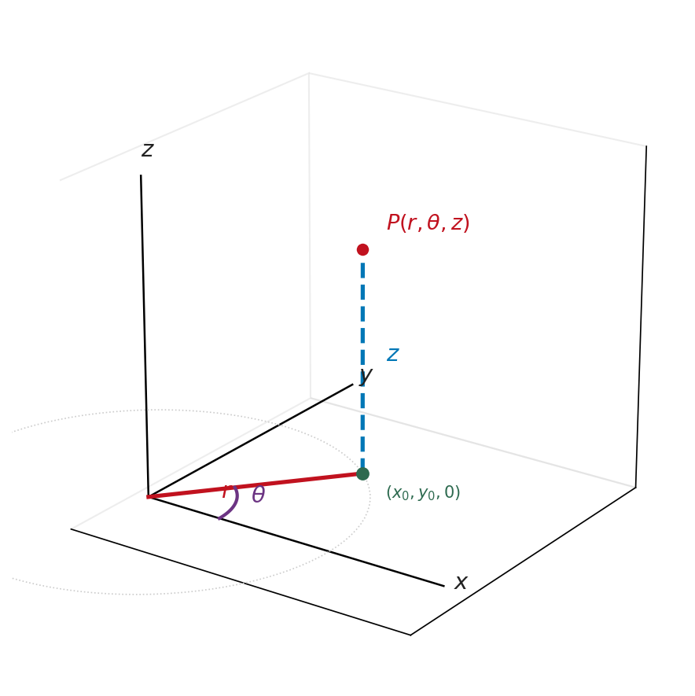
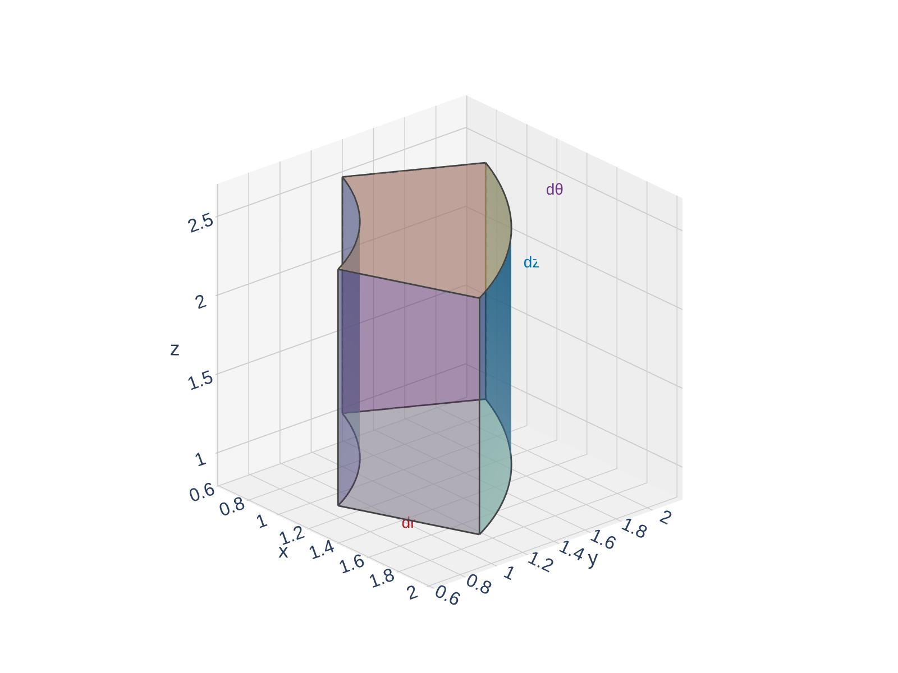

Section 15.7: Triple Integrals in Cylindrical Coordinates
Multiple Integrals
MTH 310
Calculus III
Why Cylindrical Coordinates?
In Section 15.4 we saw that polar coordinates simplify double integrals over circular regions. Now we need the same trick for triple integrals over solids with circular symmetry.
Examples of circularly symmetric solids:
- A cylinder \(x^2 + y^2 \leq 4\) with \(0 \leq z \leq 5\)
- A cone \(z = \sqrt{x^2 + y^2}\) capped at \(z = 3\)
- A paraboloid \(z = x^2 + y^2\) below \(z = 9\)
In Cartesian coordinates, the limits involve \(\sqrt{...}\) expressions from solving \(x^2 + y^2 = r^2\). In cylindrical coordinates, these become simply \(r = \text{const}\) — much cleaner.
The Cylindrical Coordinate System
A point in 3D space can be described by \((r, \theta, z)\) where:
- \(r\) = distance from the \(z\)-axis (same as in polar: \(r \geq 0\))
- \(\theta\) = angle in the \(xy\)-plane from the positive \(x\)-axis (same as in polar)
- \(z\) = height above (or below) the \(xy\)-plane (same as in Cartesian)

Think of it this way: stand at the origin, face along the positive \(x\)-axis, turn by angle \(\theta\), walk out a distance \(r\) — that puts you at \((r,\theta,0)\) in the \(xy\)-plane. Then ride the elevator up (or down) by \(z\).
Conversion Formulas
Cylindrical \(\leftrightarrow\) Cartesian Conversions
Cylindrical to Cartesian:
\[x = r\cos\theta, \qquad y = r\sin\theta, \qquad z = z\]
Cartesian to Cylindrical:
\[r^2 = x^2 + y^2, \qquad \tan\theta = \frac{y}{x}, \qquad z = z\]
Common surface conversions:
| Cartesian | Cylindrical | Surface |
|---|---|---|
| \(x^2 + y^2 = 4\) | \(r = 2\) | Cylinder of radius 2 |
| \(z = \sqrt{x^2 + y^2}\) | \(z = r\) | Cone |
| \(z = x^2 + y^2\) | \(z = r^2\) | Paraboloid |
| \(x^2 + y^2 + z^2 = 9\) | \(r^2 + z^2 = 9\) | Sphere of radius 3 |
| \(z = 2x\) | \(z = 2r\cos\theta\) | Plane through \(z\)-axis |
The Volume Element in Cylindrical Coordinates
In Cartesian: \(dV = dx\,dy\,dz\).
In cylindrical, we need the same extra factor we saw in polar coordinates.
A small cylindrical “wedge” at position \((r, \theta, z)\) has:
- Radial thickness: \(dr\)
- Arc length: \(r\,d\theta\) (the \(r\) factor!)
- Height: \(dz\)
So the volume element is:
\[\boxed{dV = r\,dz\,dr\,d\theta}\]
This is exactly the polar area element \(dA = r\,dr\,d\theta\) with a \(dz\) tacked on.

Quick Check: Convert to Cylindrical
Rewrite each equation in cylindrical coordinates:
- \(x^2 + y^2 + z^2 = 9\)
- \(x^2 + y^2 = 4\)
- \(z = 3x^2 + 3y^2\)
When to Use Cylindrical Coordinates
Use cylindrical coordinates when:
- The region involves cylinders (\(x^2 + y^2 = a^2\)), cones (\(z = c\sqrt{x^2 + y^2}\)), or paraboloids (\(z = a(x^2 + y^2)\))
- The integrand involves \(x^2 + y^2\) (it becomes \(r^2\) — cleaner)
- The projection onto the \(xy\)-plane is a circle, annulus, or sector

Template for a cylindrical triple integral:
\[\iiint_E f(x,y,z)\,dV = \int_{\alpha}^{\beta}\int_{h_1(\theta)}^{h_2(\theta)}\int_{u_1(r,\theta)}^{u_2(r,\theta)} f(r\cos\theta,\, r\sin\theta,\, z)\;\underbrace{r\,dz\,dr\,d\theta}_{dV}\]
Typical order: \(dz\,dr\,d\theta\) (height first, then radial, then angular). But other orders are possible.
Example 1: Volume in the First Octant
Example 1
Find the volume of the solid in the first octant that lies under the plane \(z = 2x\) and inside the cylinder \(x^2 + y^2 = 4\).
Example 2: Volume Inside a Cylinder, Below a Cone
Example 2
Find the volume of the solid inside the cylinder \(x^2 + y^2 = 4\) between \(z = 0\) and the cone \(z = \sqrt{x^2 + y^2}\).